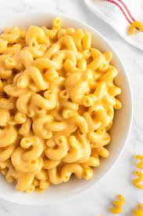

Macaroni $ Cheese

Description
Macaroni and cheese is cooked macaroni pasta topped with a cheese sauce.
Ingredients
- 6 ounces (170g) elbow macaroni
- Salt
- 6 ounces (180ml) evaporated milk
-
6 ounces (170g) grated mild or medium cheddar cheese, or any good melting cheese,
such as Fontina, Gruyère, or Jack
Steps
-
Place macaroni in a medium saucepan or skillet and add just enough cold water to cover.
Add a pinch of salt and bring to a boil over high heat, stirring frequently.
Continue to cook, stirring, until water has been almost completely absorbed and macaroni
is just shy of al dente, about 6 minutes.
-
Immediately add evaporated milk and bring to a boil.
Add cheese. Reduce heat to low and cook, stirring continuously,
until cheese is melted and liquid has reduced to a creamy sauce, about 2 minutes longer.
Season to taste with more salt and serve immediately.